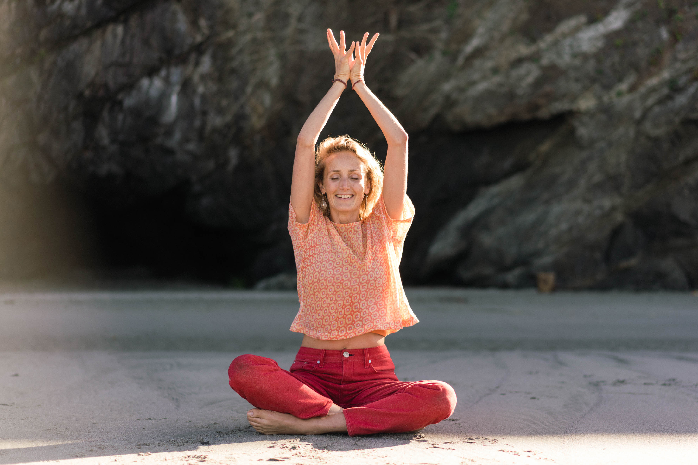

If you’re ready to be seen in your totality, this is for you.
If you’re tired of piecemeal remedies and fractured care, this is for you.
If you’re ready to redefine or accelerate your career or business, this is for you.
Ancient traditions recognized the interplay between mind, body, and spirit. I was gifted the training and ability to offer deeply integrative, transformative Vedic insights and remedies.
Ready for the upgrade of a lifetime?
Free 20-minute call · No commitment

I discovered yoga as a teenager, and what began as curiosity became a lifelong calling. In 2015 I began my formal study in the Vedic sciences, and over the past decade I have taught in private, studio, retreat, and virtual settings across the world — bringing an integrative approach that weaves together all three pillars of the Vedic traditions.
My path has been shaped as much by life as by study. As a 2x cancer survivor and serial entrepreneur, I have navigated profound personal transformation alongside the demands of building and leading new businesses and organizations. These experiences inform the way I show up for every client, with both learned wisdom and lived understanding.
I am a long-time student of Dr. Justine Lemos, PhD. Our lineage integrates three ancient modalities that work together as a complete system:
I've spent my career building businesses from the ground up, working for nearly 20 years alongside founders, leaders, and innovators. Today I advise early-stage tech companies on strategy and growth, drawing on hands-on experience as a startup co-founder and CEO.
One integrated program drawing on the full spectrum of Vedic wisdom, tailored to your life and the season you’re in.
Three 60-minute sessions + a 30-minute follow-up
Posture, meditation, breath, and philosophy to steady the mind and anchor a daily practice.
Your constitution, lifestyle, and remedies, tailored to how your body actually runs.
Your birth chart as a map of timing, purpose, and the decisions in front of you.
Start with a free 20-minute call
"She draws from Ayurveda, yoga, and Jyotish not as separate modalities, but as a coherent way of sensing what needs to be healed."
Krisha, Costa Rica
I've worked with Scarlett on and off for five years through major health challenges, life transitions, and seasons of significant change. What sets her apart is how integrated and embodied her wisdom in the Vedic arts is. She draws from Ayurveda, yoga, and Jyotish not as separate modalities but as a coherent way of sensing and seeing what needs to be healed, and she applies them with precision and calm. She has provided me with tangible remedies that translate easily into daily life that have truly worked for me. I've found genuine relief through working with her. Physically, emotionally, spiritually, and in terms of understanding the longer arc of what I was moving through. She is a talented, intuitive practitioner and one I'll keep returning to.
"The clarity I received gave me the fortitude to make healthy changes in my life that I felt immediately."
Zavi, Oregon
I came to Scarlett wanting a deeper understanding of my Jyotish chart along with direction of what to do to alleviate various ailments and heavy feelings in my life. Her intuitive vision and studied wisdom brought both insights and concrete things to do specific to what was happening to me that nourished me in ways I would have never experienced on my own. Her support was steady and constant. The clarity received about where I'm at now and where I am moving towards was reassuring and gave me the fortitude to make healthy changes in my life that I felt immediately. I would recommend her to everyone looking to be more connected to their natural flow, wellbeing and highest sense of self.
"She holds that knowledge lightly and generously, which is what makes it so alive in a room."
Caroline, London
I met Scarlett at a shared workspace in London and we became fast friends — almost inevitably, given our mutual obsession with yoga. What struck me early on, and has only deepened since, is the sheer breadth and sincerity of her knowledge. In my years of teaching in London I've encountered a lot of practitioners, but rarely someone with such an authentic grounding in the Vedic tradition — not just the poses themselves, but their origins, symbolism, and spiritual intent. She holds that knowledge lightly and generously, which is what makes it so alive in a room. Combined with real teaching experience and a gift for making the profound feel accessible, she is the real thing. I recommend her without reservation.